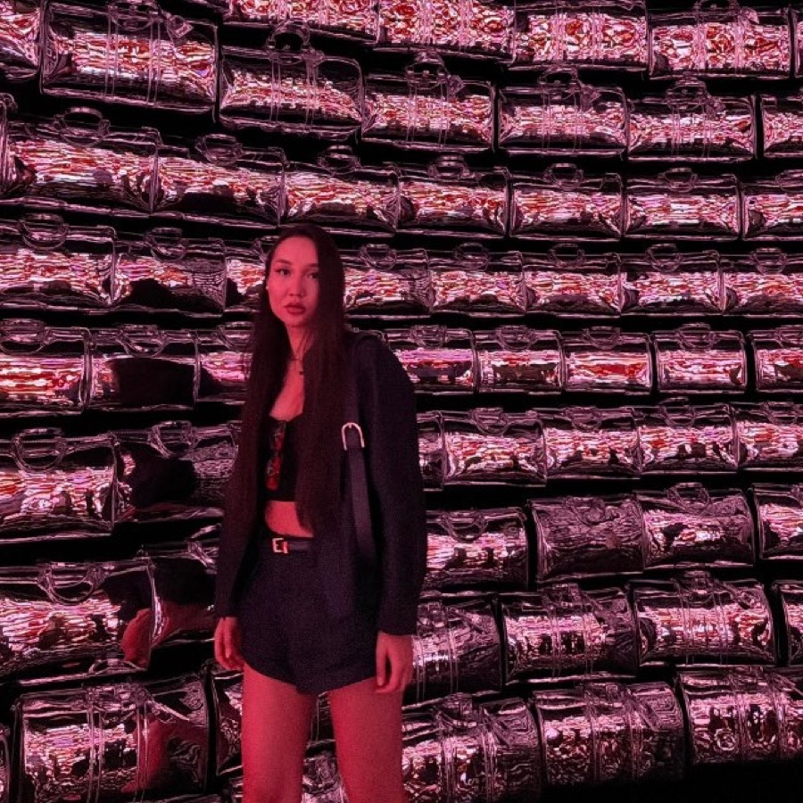
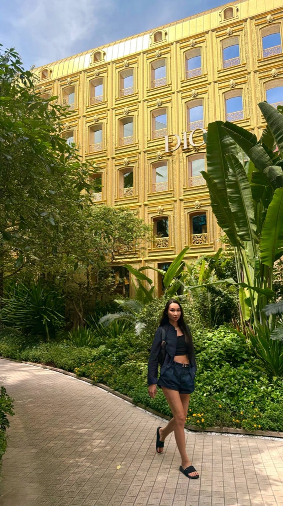

Для тебя есть музыка. Сделай погромче и нажми кнопку.

Только для Жанель
Я Руслан. Увидел твои фото и сделал эту страницу, потому что одним сообщением такое не сказать.

Золотой фасад, пальмы, тёмный образ и спокойный шаг. Как кадр из журнала.
А ещё Петронас ночью, концерт The Weeknd с красным светом и огнём, потом осенний лес. Ты умеешь и громко, и тихо, и это редкость.
Blinding Lights
The Weeknd
Когда я смотрел твои фото, у меня в голове играла именно она. Сначала я думал, что из-за концерта. Потом понял, что из-за твоего взгляда.
У тебя глаза, в которые хочется смотреть чуть дольше, чем прилично. Внимательные, глубокие, с лёгкой хитринкой. На фото у башен это видно сильнее всего.
Ты расскажешь, как прошла поездка и концерт, а я послушаю. Выбери, как тебе удобнее.
Когда
Куда
Твой ответ